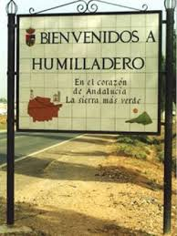
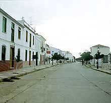
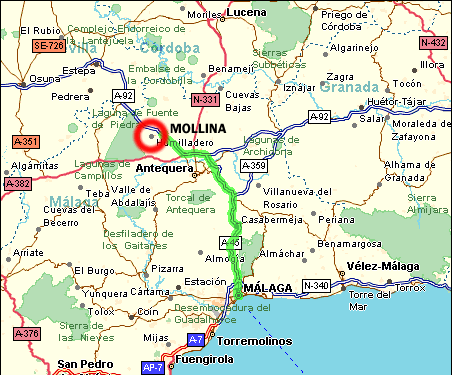
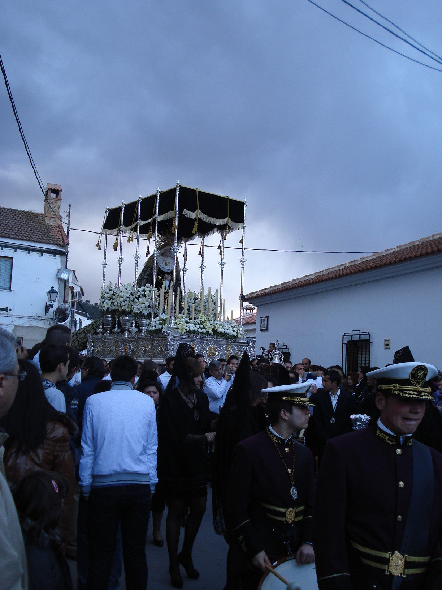

Humilladero, es un pequeño pueblo agrícola en la provincia de Malaga.
La mayoría de casas son blancas, de construcción moderna en su mayor parte, aunque la antigüedad del lugar data del 1618.

Ubicado en la comarca de Antequera, sus terrenos llanos, cubiertos de olivos y cereales principalmente, al pie de la sierra de Humilladero.-

Datos generales:
Gentilicio: Humilladerenses o gatos
Extensión superficial: 35 km²
Altitud sobre el nivel del mar: 448 metros
Distancia a la capital de Malaga: 69 km
habitantes año 2011: 3.358

Andaluzsoy